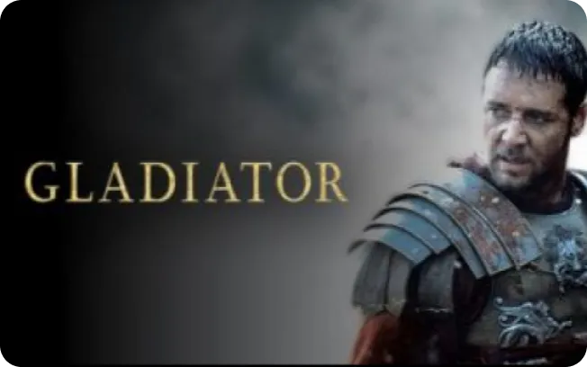

Le Colisé, un lieu culte et son histoire.
Le Colisée est le plus grand amphithéâtre de l’Antiquité. Situé dans le centre de Rome, il était à l’origine de grandes activités ... voir plus

Temps de lecture : 5 min
Gladiator est un film de fiction historique revisitant la chute de l’Empire romain. Il est réalisé par le cinéaste Ridley Scott, réalisateur de plusieurs films cultes.
Ridley Scott est réalisateur et producteur britannique. Il est le réalisateur du film Gladiator. Après un passage à vide dans les années 90, le cinéaste britannique revient sur le devant de la scène avec Galdiator. Cet homme se met en tête de réaliser un péplum, un genre de fiction historique, alors que le genre est quasiment tombé dans l'oubli à l'époque. Ce film a connu un énorme succès ainsi que de nombreuses critiques élogieuses. Il devient un réalisateur remarquable avec beaucoup de talent et de passion pour le métier. On le voit par exemple avec Blade Runner, un classique des films de science-fiction des années 80, American Gangster, film sur la mafia ou encore Black Hawk Down qui raconte une mission spéciale des armées américaines. Cependant, Gladiator est un de ses chefs d'œuvres.
Le scénario, la mise en scène, ainsi que les reconstitutions historiques sont crédibles et fascinantes. De plus les acteurs se donnent à fond pour un film qui ne devait pas connaitre un si grand succès. Cela donne des scènes épiques, grandioses et émouvantes. Les décors et les costumes sont fidèles et réalistes, rendant cette expérience encore plus plaisante.

Maximus Decimus Meridius, joué par Russel Crowe, est un général des armées romaines renommé et fidèle qui se voyait prendre la place de l’Empereur Marc Aurèle. À la suite de cette déclaration, Commode, fils de l’Empereur devient fou de rage, il tue son père et se proclame Empereur. Il demande ainsi l’exécution du général Maximus et de sa famille. Après cet événement, s’en suit une violente rivalité, mais fabuleuse. Lors d’un combat entre les deux personnages principaux, une phrase mythique du film est énoncé après un premier conflit.
Mon nom est Maximus Decimus Meridius, commandant en chef des armées du Nord, général des légions Felix, fidèle serviteur du vrai empereur Marc Aurèle. Père d'un fils assassiné, époux d'une femme assassinée, et j'aurai ma vengeance dans cette vie ou dans l'autre.
Devant ce tel affront, Commode demande un ultime combat. Mais qui va gagner ?
Voir le résultatLe Colisée est le plus grand amphithéâtre de l’Antiquité. Situé dans le centre de Rome, il était à l’origine de grandes activités ... voir plus
Berserk est un manga seinen de dark fantasy du mangaka Kentaro Miura. Il est inspiré de la période du moyen-âge Européen ... voir plus